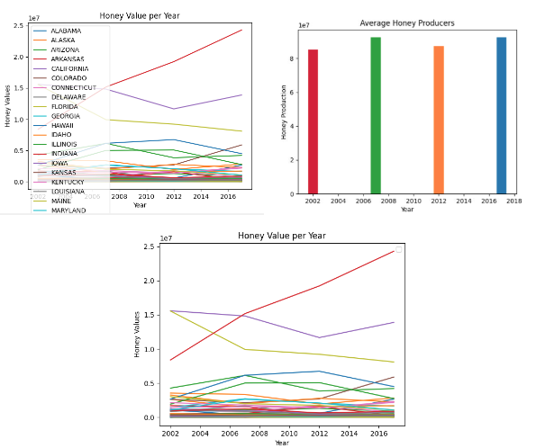
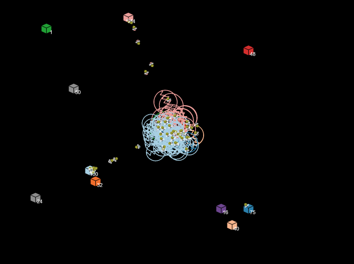
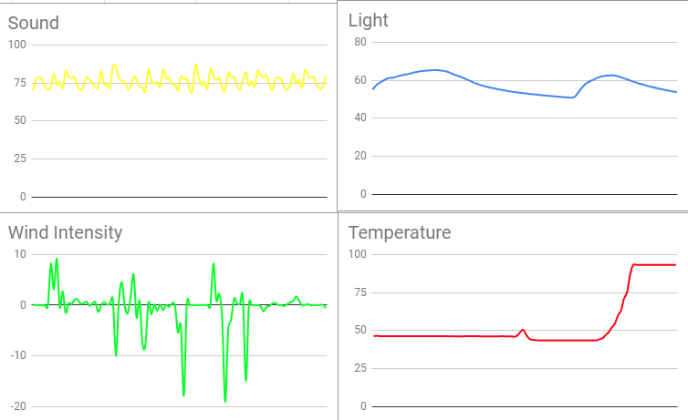

Home
Portfolio
About Me
This is my Portfolio Page!
Sugar Cookie Decorator 1.1.9 Project
This game is named "Sugar Cookie Decorator". The screen starts off an empty plate, and the cookie continues to be made after a answering a set of questions. The options are shown to the user through lts and print statements. Once the cookie is made the program ends saying "Enjoy your cookie".
Python Memory Game 1.2.5 Project
This game is called "Python Memory Game". The game first asks for the players name in the terminal to later be used for the leaderboard. The game then displays directions on the screen, saying to memorize the flashing sequence from the circles of color, and that they'll have 60 seconds to memorize the different levels of color. After memorizing the sequence the player will then have to click on the colors, to check if they got the sequence correct they'll press "N". When the 60 seconds ends the game will load to the leaderboard, if they scored high enough the player's name and score will be displayed. If the player doesn't make leaderboard the game will display, "Sorry, you didn't make leaderboard". If the player clicks the correct sequence a nyan cat will move across the screen, and displaying the text "Success". If the player clicks the wrong colors the game will immediately end, and display "You Lose", aswell as the leaderboard.
Super Mario Race Scratch Project
This game is called "Super Mario Race". The game begins after the "START" buttoon is clicked. It is a 2 player game, if you want to be Mario you use keys "A" and "D", if you want to be Luigi use the left and right arrow keys. The lap counter in the right corner determines who wins and when the game is over. We used procedures, animation, counters, change of costumes, sounds, scores, and input in our code.
Project 3.2.4

In this project we used data files to create different graphs that compare honey value per year between different states and how much honey a honey producer makes per year.

In this projuect we explored the BeeSmart Hive finding simulation using NetLogo. We found out that in real world systems scout bees will be sent off to find hives suitable for the entire swarm. Once they find a hive they'll go back to the swam and leave a dance path to show how far the new hive is so other bees can travel to it.
Project 3.1.6

In this project we seperated data from a rover on an alien planet, to figure out which region the rover was in. From the data we concluded that the rover was in the Rocky Mountain ragiion..